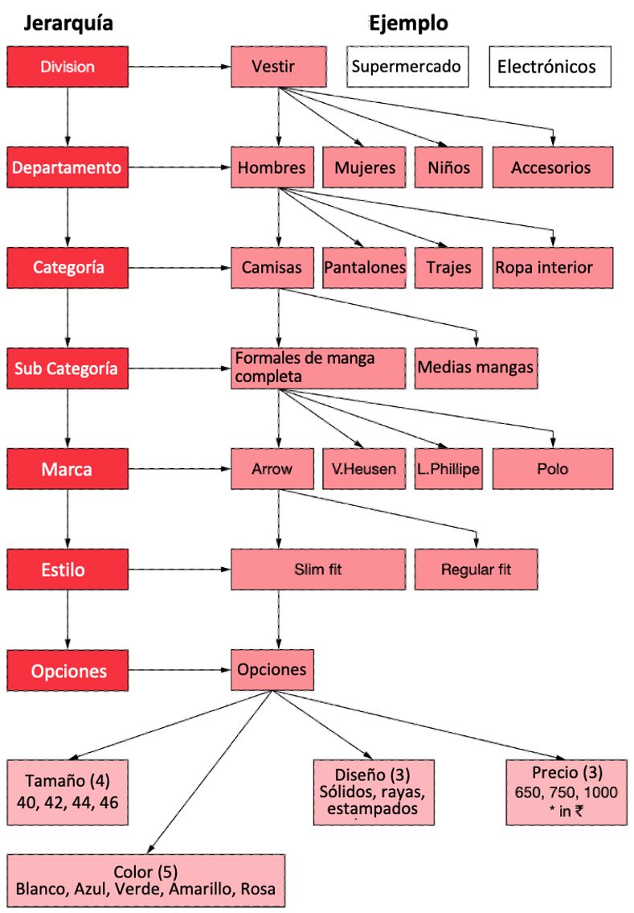
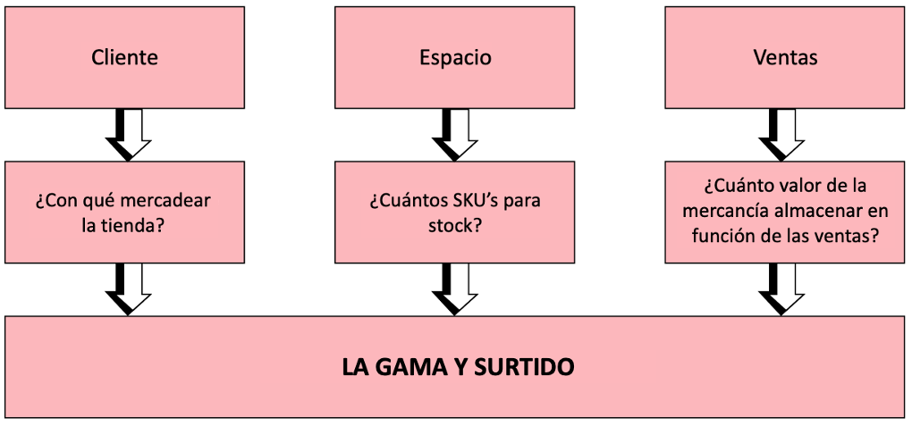
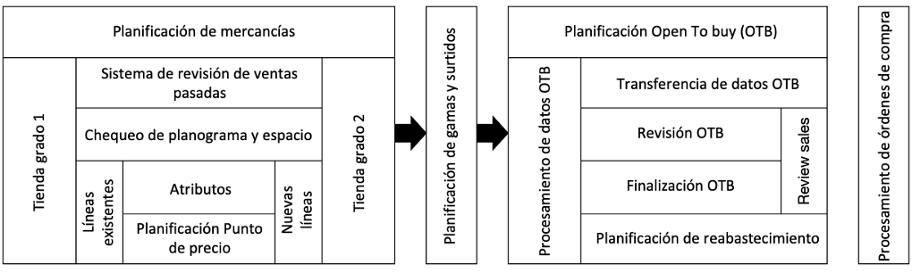
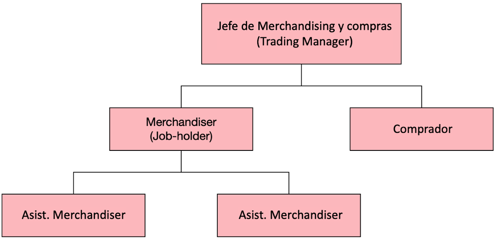

Objetivos
Proporcionar una comprensión básica del concepto de merchandising.
Subraye la relevancia de la planificación de mercancías en una organización minorista.
Proporcionar información sobre clasificación y agrupación de mercancías y definir el concepto de jerarquía de mercancías.
Conocer el concepto de planograma y cross merchandising en la presentación de mercancías.
Definir el proceso de planificación y surtido de la gama.
Conozca el proceso de planificación financiera en la planificación de mercancías, aumentos, rebajas, márgenes, mermas y margen bruto de retorno de inventario.
Elaborar la organización de merchandising de un minorista típico.
Planificación de merchandising
La planificación de merchandising es el proceso de previsión de ventas y gestión de inventarios para lograr el objetivo de comprender y atender las necesidades de mercancías de los clientes a tiempo. Al mismo tiempo, la planificación de mercancías ayuda a la organización minorista a lograr también sus objetivos de margen. Brinda una comprensión clara de la combinación de mercancías que se planificará para cada tienda, según el pronóstico de ventas y el historial de ventas, si corresponde. Los aspectos clave del proceso de planificación de mercancías son:
Clasificación y agrupamiento
Planificacion maestra
Planificación de inventario y
Planificación de gamas y surtidos
Clasificación y agrupamiento
El proceso de clasificación y agrupación implica la planificación de mercancías en un escenario minorista donde la organización tiene una gran cantidad de tiendas. La mezcla de mercancías personalizada y específica de la tienda debe planificarse y, por lo tanto, se planifica una mezcla de mercancías rentable y orientada al cliente teniendo en cuenta los grados y las capacidades de varias tiendas. Para ejecutar el plan sin esfuerzo, a menudo se agrupan y agrupan las mercancías con respecto a los puntos de precio y los estilos, de modo que dicha planificación de mercancías dé en el blanco de las necesidades de los clientes en cada tienda.
Esto significa que las tiendas en el mismo grado de combinación de mercancías que tengan el mismo perfil y capacidades, según lo determinado en la planificación de la tienda, recibirán la misma combinación de inventario. La clasificación y el agrupamiento aseguran que las tiendas más grandes que tienen una mayor capacidad reciban una mayor variedad de productos y no solo más de lo mismo, evitando la posibilidad de que una tienda con menor capacidad reciba más opciones que una tienda con mayor capacidad.
El grado de reabastecimiento también se planifica siguiendo los patrones de desempeño de cada tienda, lo que no necesariamente significa que cada tienda recibirá los mismos números en reabastecimiento, pero está basado en el desempeño. Los grados de reabastecimiento se planifican de acuerdo con las ventas en cada tienda y dicha participación en las ventas determina el grado de reabastecimiento y la periodicidad del reabastecimiento para que se logre un servicio al cliente oportuno.
Planificacion maestra
La planificación maestra de mercancías ayuda a definir y ejecutar los objetivos de crecimiento y rentabilidad en todos los canales minoristas, regiones, tiendas, categorías de mercancías, etc. La planificación maestra también impulsa la ejecución de los objetivos estratégicos de comercialización planificados por la organización para superar la competencia y lograr el crecimiento ofreciendo mercadería diferenciada a los clientes y al mismo tiempo logrando rentabilidad por una combinación de mercadería ganadora. La planificación maestra define los límites y la escala de comercialización en sintonía con los objetivos estratégicos definidos por la organización para lograr la satisfacción del cliente y la rentabilidad.
Planificación de inventario
Para un minorista, el objetivo de la planificación del inventario es claro, logrando los siguientes siete ‘CORRECTOS’:
El Producto Correcto
El Lugar Correcto
La Cantidad Correcta
La Calidad Correcta
El Precio Correcto
La Mezcla y el Surtido Correcto
El Momento Correcto
Para satisfacer las necesidades de cada cliente, la tienda minorista debe tener el producto correcto en el lugar correcto, en la cantidad correcta, con la calidad correcta, al precio correcto, con la combinación correcta de tamaños o variantes y en el momento correcto. La función de la comercialización o merchandising es lograr todos estos “correctos” para que las ventas sean altas con un nivel ideal de mantenimiento de inventario y, por lo tanto, más ganancias.
Jerarquía de mercancías
Al planificar la combinación de mercancías, una organización minorista debe comenzar con una definición clara de su jerarquía de mercancías. La jerarquía de mercancías es una forma disciplinada de agrupar la combinación de mercancías en diferentes niveles, desde una agrupación de alto nivel hasta el nivel más bajo de la unidad de mantenimiento de existencias (SKU). En ocasiones, la agrupación puede tener incluso más de 4 o 5 niveles, como se muestra en el siguiente ejemplo (ver Figura 1.1).
Figura 1.1 Jerarquía de Mercancías

La jerarquía de mercancías forma la plataforma necesaria para crear la combinación de mercancías de la tienda. La visión de comercialización de la tienda dicta las diferentes divisiones y los peldaños más bajos que debe tener la tienda en la jerarquía.
Construir la combinación de mercancías de la tienda siguiendo el concepto de jerarquía de mercancías tiene sus ventajas:
Se puede definir en términos de proporciones la combinación de elementos en cada nivel de la jerarquía.
Se puede analizar y profundizar a través de los peldaños de la jerarquía hasta las áreas problemáticas, si las hay, hasta el nivel de SKU.
Uno puede eliminar o agregar elementos siguiendo las escaladas de seguridad. Esto significa que si las decisiones de mercadería de la tienda deben tomarse con base en el desempeño, digamos, de los millones de SKU que contribuyen a la formación de la pirámide de mercadería para la tienda (el pico son las divisiones), las decisiones en los peldaños más bajos pueden ser tomadas por personal de primera línea. Aquellos en los niveles más altos, que impactarían la propuesta/imagen de la mercancía de la tienda, pueden ser tomados por los superiores.
SKU
Para usar un ejemplo (ver Figura 1.1), una camisa blanca talla 40 de diseño sólido al precio de 750 (todas las opciones en el último nivel) que tenga un cuello abotonado de la marca Arrow en las mangas completas, la categoría o subclase de la categoría de camisas que pertenece al departamento de hombres de la división de ropa en una organización minorista es un SKU. Los niveles en la jerarquía de mercancías pueden ser diferentes para varias categorías de productos. Por ejemplo, en un supermercado, los siguientes pueden ser los niveles de jerarquía de mercancías asignados para productos como Ketch-up Maggi y ollas a presión Prestige:
Planificación de gamas y surtidos
Los tres impulsores críticos de la comercialización o merchadising son el cliente, el espacio disponible en la tienda y la capacidad de venta de la tienda. Una comprensión clara de las preferencias del cliente se determina a través de la clasificación de la tienda y la consiguiente clasificación de la mercancía permitirá que la función de comercialización responda a la pregunta “¿Con qué comercializar la tienda?”. Una vez finalizado esto, viene la pregunta “¿Cuántos SKU deben constituir la combinación de mercancías para abastecer la tienda?” Esto se determina estudiando la capacidad de la tienda para almacenar, mapeando el planograma de la tienda en el departamento, sección, niveles de categoría, que se explica en detalle en esta misma sección.
La planificación de la gama y el surtido de la tienda también se basa en su rendimiento de ventas y, por lo tanto, “¿cuánto es el valor de la mercancía que se almacenará?” es la tercera pregunta crítica que debe hacerse y responder en la planificación de la gama y el surtido de la mercancía.
El inventario de una tienda se planifica como una mezcla en términos porcentuales en cada peldaño de la jerarquía de mercancías de la tienda. También se crea un plan de márgenes a nivel de categoría para planificar los márgenes brutos que cada nivel (hasta el nivel SKU) aporta a la tienda. La definición de la mercadería y la planificación del surtido en base a los niveles de jerarquía ayudan a analizar las ventas semanales, plan de stock y consumo, etc., a nivel de categoría, subcategoría, marca o SKU.
Con esto, también se puede identificar cualquier problema en las ventas o en el mantenimiento de inventario en cualquier nivel y tomar medidas correctivas. Dichas acciones correctivas están a cargo del plan ‘Open To Buy’ (OTB), explicado en detalle en detalle posteriormente en otra publicación del blog, Compras al por menor. Este es normalmente el factor de éxito más significativo en la implementación del proceso de planificación de inventario.
Figura 1.2 Planificación de gamas y surtidos

Ejemplo de surtido de camisa para 20 piezas en stock:
Pequeño / 2, Mediano / 6, Grande / 7, Extra Grande / 4,
X’tra X’tra Largo / 1 = 20 piezas
Dicho plan de surtido ayuda a reponer artículos en el inventario de la tienda después de que se venden al establecer niveles mínimos y máximos de unidades de almacenamiento. Por ejemplo, en el ejemplo anterior, si la relación de surtido se planifica según la rotación de stock planificada para la tienda como 20 piezas, entonces el stock máximo disponible en el SKU solo puede ser 20. El activador de reabastecimiento se puede planificar de modo que se compensa cuando las existencias alcanzan un nivel mínimo especificado después de las ventas. Otra forma de planificar el reabastecimiento, que generalmente se realiza en categorías de alta rotación, es desencadenar nuevos pedidos a medida que se vende la mercancía con un tope en la tenencia máxima de existencias.
Los tres aspectos más importantes que se tienen en cuenta durante la preparación de la gama y el plan de surtido son la variedad, la anchura y la profundidad:
Variedad: la línea de productos en cada departamento en detalle en una variedad de categorías se conoce como “Variedad” en el lenguaje de planificación de rango. Por ejemplo, si una tienda por departamentos tiene una gran cantidad de categorías como hogar, artículos de oficina, muebles además de hombres, mujeres, niños, accesorios y se dice que la variedad es grande. La variedad puede ser mínima si una tienda por departamentos solo tiene categorías de prendas de vestir y una gama limitada que no es de prendas de vestir.
Ancho: el ancho se refiere al surtido en el rango y la planificación del surtido. Por ejemplo, en un supermercado, si a nivel de marca la gama tiene muchas marcas de mayonesa, entonces el ancho se considera bueno. Ancho se refiere a la oferta de una amplia variedad de marcas en una categoría de producto.
Profundidad: La cantidad de acciones mantenidas en una opción se refiere a la profundidad. Eso significa que si un SKU se almacena en muchos números, significa que la profundidad de almacenamiento de un SKU es buena.
Mientras que los hipermercados tienen una gran variedad de categorías de mercancías, buen ancho y profundidad, las tiendas de conveniencia tienen una variedad y un ancho muy limitados, aunque la profundidad puede ser razonablemente buena. Las tiendas minoristas tienen un compromiso entre variedad, ancho y profundidad considerando la tasa de venta, el espacio asignado y el OTB disponible. Los conflictos ocurren cuando las marcas compiten entre sí por el espacio en los estantes, especialmente en los puntos de venta minorista multimarca. Las empresas de bienes de consumo masivo compiten con las marcas propias para ocupar espacio en las estanterías. Cuando la venta está directamente relacionada con la proporción y la cantidad almacenada y expuesta, se producen tales conflictos que los minoristas deben gestionar.
Planograma
El aspecto de “espacio” del plan de rango y surtido se mapea como un plan de rango gráfico llamado planograma. Este tipo de plan se aleja del tipo de planificación puramente numérico que se ha utilizado hasta ahora y permite armar la gama de manera visual. Por lo general, las imágenes almacenadas digitalmente se manipulan en guiones gráficos tipo collage. Los paquetes de software de planificación de espacio como el de AC Nielsen son compatibles con dicho mapeo gráfico de existencias base, lo que ayuda a planificar fácilmente el reabastecimiento y a utilizar el espacio de la tienda de manera efectiva.
Por lo tanto, la planificación del surtido de mercancías y el mapeo de existencias base (métodos numéricos y visual-numéricos respectivamente) permiten tener en cuenta la utilización del espacio en una tienda calculando el rendimiento del espacio empleado o el rendimiento del metraje.
Comercialización cruzada
El término cross merchandising se utiliza en el comercio minorista con referencia a las adyacencias relacionales de la colocación de mercancías en una tienda minorista. El fenómeno de mantener en los estantes de las tiendas y colocar un producto en relación con el otro se conoce como cross merchandising. El minorista puede vincular productos relacionados y mantenerlos juntos y promocionarlos juntos también. Una tienda puede tener su propia mantequilla de marca privada que puede tener más márgenes. Para promover la venta de mantequilla el detallista podrá exhibir el pan que se vende rápido y que además se consume con mantequilla. Siempre existe la posibilidad de que ese cliente venga a comprar pan y también mantequilla.
La tienda también puede exhibir junto con huevos y mermelada, lo que nuevamente generará interés en el comprador y puede inducirlo a comprarlos también. Todos estos artículos comercializados juntos en la tienda (generalmente guardados en un punto de vista de fácil acceso para inducir la compra impulsiva) aumentarán la venta. Este tipo de merchandising generalmente se realiza en los supermercados además de exhibir cada artículo en los estantes de sus respectivas categorías. Este tipo de merchandising cruzado a menudo va acompañado de charlatanería relevante bien redactada para atraer la atención del cliente.
Rentabilidad del margen bruto del inventario (Gross Margin Return On Inventory)
La medida de rendimiento fundamental para la comercialización en el comercio minorista es el margen bruto de retorno del inventario (GMROI). Cada organización minorista debe esforzarse por garantizar la rentabilidad al lograr el mejor GMROI posible.
El GMROI se calcula dividiendo el margen total obtenido por el inventario promedio mantenido durante el período. El inventario promedio mantenido se puede considerar al costo o al valor de MRP, pero se debe mantener la consistencia al medir el crecimiento en GMROI o comparar el mismo para diferentes períodos.
Problema: ¿Cuál es el GMROI para una tienda minorista si su margen obtenido es de 30 mil y el inventario promedio mantenido durante el mes es de $200 mil?
Márgenes = 30,000 (Turnover – COGS)
Retención de inventario promedio = 200,000
Entonces,
\[GMROI=\frac{30,000}{200,000}\ \cdot100\ =\ 15\%\]
Los medios significativos para lograr un mejor GMROI son:
Reducir el costo de los bienes vendidos (COGS) logrando mejores eficiencias de compra.
Aumentar la tasa de rotación de existencias al reducir el inventario promedio mantenido.
Incrementar las ventas constantemente, manteniendo el mismo valor promedio del inventario mantenido.
Markups (Aumentos) y Markdowns (Rebajas) en la planificación de mercancías
La planificación de mercancías en la venta al por menor tiene en cuenta el proceso de fijación de precios que incluye tanto los aumentos como las rebajas. En el proceso de planificación de mercancías se incluye un presupuesto de rebajas con una clara previsión de pérdidas de márgenes por rebajas previstas. El margen de beneficio ocurre cuando se ve afectado un aumento de precio y, en tal situación, aumentan los márgenes brutos para el minorista. Tomando esto también en consideración junto con la pérdida de márgenes en las rebajas, se realiza la planificación del margen de mercancías. Las compras incorrectas resultantes de una previsión defectuosa pueden dar lugar a la acumulación de existencias, lo que puede dar lugar a la reducción de los precios para la liquidación. Los aumentos y rebajas las analizaremos en posteriores publicaciones del blog, al analizar Estrategias de fijación de precios.
Merma o contracción en la gestión de mercancías al por menor
A intervalos periódicos, se puede encontrar una diferencia entre la cantidad o el valor real de existencias, encontrado o establecido mediante un recuento físico real de todos los inventarios, y la cifra del valor en libros. El valor en libros es lo que existe en el sistema de contabilidad de inventario o en los libros de cuentas de la tienda minorista. La diferencia entre los dos, normalmente donde la cifra contada físicamente es menor que el valor en libros, se conoce como “merma” y se expresa como un porcentaje de las ventas.
El promedio anual de mermas varía desde un mínimo del 0,1 % hasta un máximo del 2,5 % de las ventas, según el tipo de tienda y su mercancía. Esta merma conduce a una reducción directa en las ganancias netas de la tienda.
¿Cómo se produce la merma? A nivel mundial, las tres razones principales atribuidas a la merma son el papeleo incorrecto, el robo de clientes y el robo de empleados. Si bien se dice que el papeleo incorrecto, como el registro incorrecto de facturas, la recepción de mercancías y la emisión de notas de crédito, representan una décima parte de la pérdida total, se supone que el robo de clientes y el robo de empleados comparten el saldo en igual medida. El proceso de planificación de mercancías tiene en cuenta y tiene en cuenta las mermas siguiendo los estándares de la industria, si están disponibles en el caso de una nueva ubicación de tienda o por el historial de mermas, en el caso de una tienda minorista existente. Un inventario físico al final de un período específico, como un mes o un trimestre, ayudará al minorista a conocer la cantidad exacta y el valor de la merma de la mercancía.
Soporte de TI y sistemas de planificación de mercancías
Dado que nuestros mercados son diversos, repartidos en una vasta área de regiones y ubicaciones con gustos y preferencias de consumidores muy localizados, los minoristas tienen que satisfacerlos a todos mediante la evolución de una gama centrada en el consumidor y una estrategia de planificación del surtido. Las preferencias locales deben identificarse con precisión y los minoristas deben producir surtidos que se adapten a los requisitos de mercadería de los consumidores en cualquier ubicación o tienda.
La tecnología y sus sistemas avanzados pueden integrar fácilmente la planificación de la demanda con la ejecución y el cumplimiento, con la ayuda de nuevas soluciones que pueden gestionar la planificación del surtido a través de una inteligencia comercial y un análisis de datos efectivos.
El software para empresas minoristas de JDA tiene su tecnología de planificación de surtido con soluciones para optimizar la selección de productos examinando de manera eficiente la multitud de opciones para generar planes personalizados que coincidan con las estrategias de clasificación de mercancías del minorista. Estas soluciones pueden calcular cantidades en función de la demanda del consumidor teniendo en cuenta el espacio, la tasa de venta y otros parámetros relevantes definidos.
Las soluciones de software para minoristas respaldan y promueven la toma de decisiones en cada paso del proceso de planificación de la gama y el surtido. También permiten que los planificadores de mercancías incorporen datos precisos sobre la demanda de los consumidores necesarios para crear surtidos localizados y centrados en el cliente. IS Retail de SAP, Oracle Retail Merchandise Planning and Optimization, SAS Integrated Merchandise Planning, etc., son algunos de los software empresariales minoristas de renombre que brindan la gama de productos adecuada y las soluciones de planificación de surtido.
Figura 1.3 Arquitectura del sistema de planificación de mercancías

Organización de merchandising
La estructura de la organización de merchandising dependería del tamaño de la organización minorista y de la naturaleza/cantidad de mercancías manejadas. En cualquier organización minorista, el gerente comercial (Trading Manager) lidera y dirige las funciones clave de merchandising y compras. Reportando al gerente comercial, el comerciante (merchandiser) de la organización desempeñaría el papel principal de planificar y administrar de manera proactiva las existencias y la fijación de precios adoptando los márgenes y rebajas requeridos.
El merchandiser se asegura de que cada departamento/sección cumpla con los objetivos estratégicos de comercialización y desempeño de la empresa y se coordina con la función de compras para garantizar que los departamentos/secciones satisfagan las necesidades del cliente en todo momento. El merchandiser trabaja en estrecha colaboración con el comprador para desarrollar los planes financieros para cada departamento/sección que tendrán en cuenta las oportunidades y riesgos del mercado además de las tendencias dentro del proceso presupuestario corporativo general.
El merchandiser es responsable de hacer proyecciones financieras precisas y desarrollar planes de contingencia que aseguren que se logren los objetivos de margen neto. Las funciones clave del merchandiser también incluyen la preparación de planes de rebajas mientras se mantiene una combinación equilibrada de mercancías en todo momento. El merchandiser determina efectivamente el requerimiento de pies cuadrados (espacio) para cada departamento/sección para cada grado de tiendas para que se pueda exhibir el rango óptimo mientras se entregan las devoluciones planificadas por pie cuadrado. También es responsabilidad del merchandiser planificar la variedad, el ancho y la profundidad del surtido para que se puedan lograr las ventas planificadas en cada tienda.
Figura 1.4 Organización de merchandising

La construcción de los rangos dentro de la jerarquía de mercancías bajo el alcance de la estrategia de comercialización de la organización es la principal preocupación del comerciante de una organización minorista eficiente. Los niveles que reportan al comerciante son los auxiliares o asistentes de merchandiser, generalmente responsables de cada departamento/sección de la organización minorista.